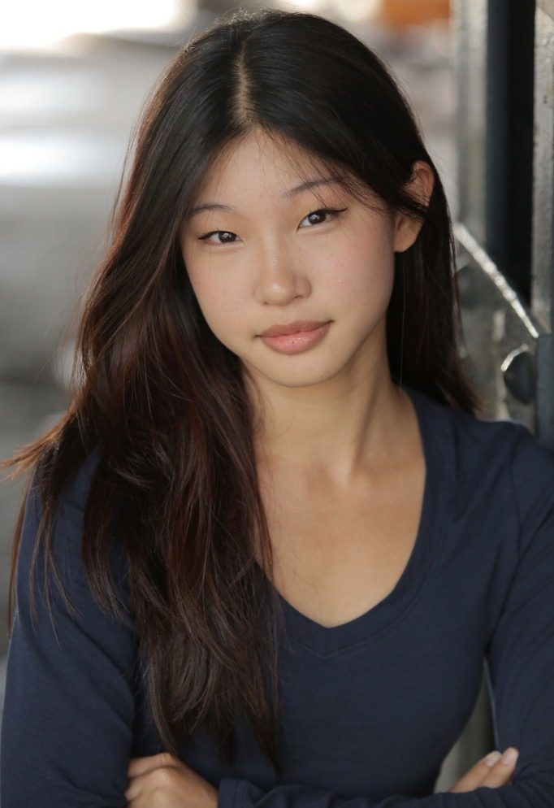

Sophie
in motion
Computer Science and Neuroscience at Duke. I build AI and data tools that make medicine and cities easier to understand, and I learn them the way I learn choreography: count it out, then make it look easy.
confidence 0.97
Experience
Each role has a spike mark on the stage. Downstage is the most recent. The further upstage, the further back in time.
- 1
AI Research Intern
Mass General Brigham · PI Dr. Synho DoBuilt Neurobiome Navigator: an AI agent over the MINERVA knowledge graph (66,000+ microbe–disease links) with semantic paper search, plus a thesis on turning biomedical findings into accessible teaching tools.
- 2
Code Coach
TheCoderSchoolCoached five students, ages 7 to 10, one-on-one in Scratch, and designed 15+ projects, including games that teach gravity, acceleration and collisions.
- 3
Radiology AI Research Intern
Weill Cornell Medicine · PI Dr. Martin PrinceAnnotated 500+ abdominal MRIs for kidney-disease segmentation, contributed to TraceOrg (0.97 Dice), and used few-shot LLM prompting to explain incidental findings to patients (RSNA abstract).
- 4
Volunteer
Believers · TokyoLed crafts, geography, cooking and music with elementary students at a “third space” for kids who struggle in traditional school.
- 5
Healthcare AI Intern
MD.aiEngineered an LLM-agent framework that turns radiology reports into patient-friendly letters, co-authored an arXiv paper, and took 2nd place at the SIIM Hackathon.
Every project began as a loose page
The stage breaks apart, and the pages drift down toward the library.
stage.burst(force=0.6)
pages = particles.assemble(n=8)
shelf.receive(pages)
Projects, at a glance
The Library
Seven projects and one reading list, landed in no particular order. Pick a sorting method and they will shelve themselves once, then stay put. Open any book to read it; the last one holds my favorite books and writing.
